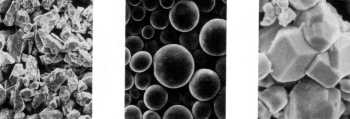
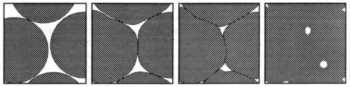
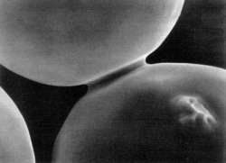

Referance Info. > Sintering Technology:
Sinterleme, toz halindeki malzemenin erime sýcaklýðý altýndaki
bir sýcaklýða belli bir süre maruz býrakýlarak tozlarýn
birbirlerine deðdikleri noktalardan baþlayarak kaynaþmasýna
denir. Moleküler çekim kuvvetleriyle partikül kabuðunda
oluþan yüzey geriliminin, sýcaklýkla azaltýlýp biribirine
kaynaþmasý, bu yönüyle eriterek kaynaþmadan çok farklýlýk
gösterir.

Metal tozlarý

Sinerlemenin 4 safhasý

Nikel tozunun sinterlemesi
sýrasýnda boyun oluþumunun ilk safhalarý 33 mikrometre
çapýnda bir toz...
Sanayide uzun bir süreden
beri metal ve seramik tozlarýyla yapýlan bulk (toptan)
sinterleme iþleminde önce geçici bir yapýþtýrýcý ile
karýþtýrýlýp bir kalýpta sýkýþtýrýlarak birbirine baðlanan
toz malzeme (green state) sonradan sinterleme fýrýnlarýnda
yükske sýcaklýklarda bekletilerek sinterlemenin gerçekleþmesi
saðlanýr. Yukarýdaki resimler bu teknolojiye aittir.
Ýnþaat sanyinde de tuðla
fayans vs seramik mamullerin imalatý sýrasýnda fýrýnda
ýsý ile tanelerin birleþmesi de ayný fiziksel temele
dayanýr ve bu sinterlemeye "seramik bað" denir.
Sinterleme teknolojisinin
autofabrication teknolojisyle birleþtirilmesiyle ise aþaðýdaki
farklý konular, sinterleme mekanizömalarý ve yeni araþtýrma
sahalarý ortaya çýkmýþtýr:
- Metal toza ek olarak
plastik toz malzemelerin de sinterlenmesi ihtiyacý.
- Toptan sinterleme
yerine seçmeli (noktasal taramalý) sinterleme.
- Sinterleme süresi
çok kýsalmýþtýr. Isý kaynaðý ýþýn çok kýsa bir sürede
malzeme üzerinden geçmektedir. Bu kadar kýsa sürede
ideal bir sinterlemenin olmasý çok güçtür. Genellikle
sinterleme ve erime-soðuma birlikte olmaktadýr. Bazý
autofabrication sistemlerinde sinterlemeyi tamamlamak için
parça, inþa sonrasýnda ayrý bir sinterleme fýrýnýnda
iþlem görür. Iþýn enerjisinin sinterleme veya eritmeye
yetmediði metal tozlu uygulamalarýnda ise plastikle
kaplanmýþ metal tozlarý kullanýlýr. Burada, inþa sýrasýnda
plastik tabaka ýþýnla eritilerek metal tozlar geçici
olarak yapýþtýrýlýr. Bu safhaya "green state" ismi
verilir. Sonradan bir sinterleme fýrýnýnda asýl sinterleme
yapýlýr. Bknz. 3D
Systems/SLS
|